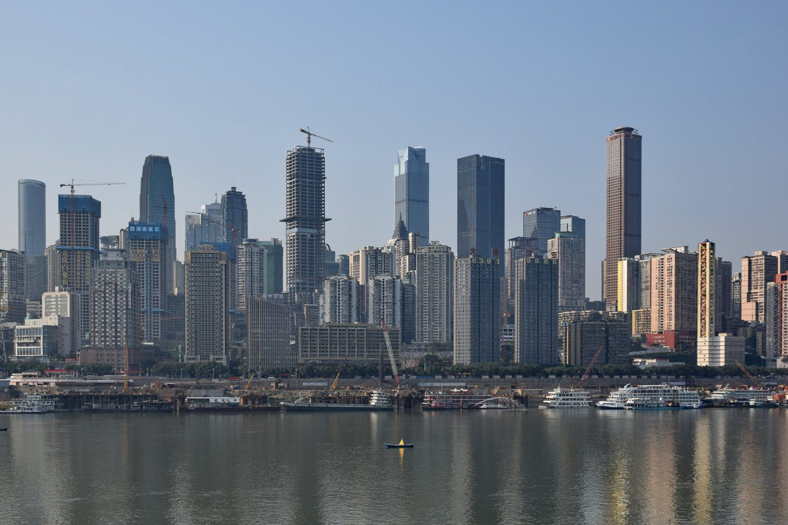
Jiefangbei CBD 解放碑
Times Square ของฉงชิ่ง — ถนนคนเดินใจกลางเมือง ตึกระฟ้า ป้าย LED แบรนด์เนม Street Food ครบที่นี่
- AccessLine 1 / 2 / 6 — Xiaoshizi
- Best Time19:00 – 22:00
นครภูเขาแปดมิติ — ที่ที่รถไฟวิ่งทะลุตึก
ไฟเหลืองเรืองสะท้อนแม่น้ำสองสาย
และหม้อไฟต้มเดือดทั้งคืน
5 สถานที่ Must-Visit · 2 มรดกโลก UNESCO · พักย่าน Jiefangbei ทั้ง 4 คืน · เส้นทางจริงบน Google Maps
ฉงชิ่งคือเมืองภูมิประเทศแบบแปดมิติ
ตึก 22 ชั้นที่คุณเดินเข้าทางชั้น 1 ออกไปโผล่ชั้น 10 ของอีกฝั่ง รถไฟฟ้าวิ่งทะลุอาคารพักอาศัยจริง สะพานคริสตัลลอยฟ้า 300 เมตร และทิวทัศน์ยามค่ำคืนที่นักท่องเที่ยวเรียกว่า "ไซเบอร์พังก์ตัวจริง" เมื่อแม่น้ำสองสายมาบรรจบ ภูเขาห่อหุ้มเมืองทุกด้าน ฉงชิ่งจึงไม่ใช่เมืองที่เข้าใจได้จากแผนที่
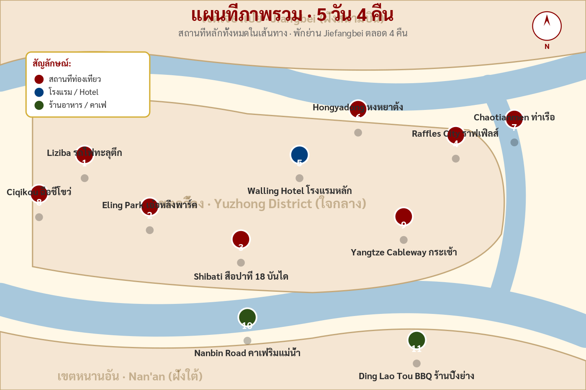
BKK → CKG · เช็คอินโรงแรม Jiefangbei · Starbucks Reserve ชั้น 250 ม. · ดูไฟ Hongyadong ยามค่ำ และหม้อไฟต้นตำรับ Liuyishou
รถไฟทะลุตึก Liziba · Eling Park · Shibati 18 บันได · Raffles City · Ding Lao Tou BBQ พร้อมวิว Sunset
รถไฟความเร็วสูง 1.5 ชม. ไปอุทยาน Wulong · สะพานหินธรรมชาติ 3 แห่ง · กลับเย็น ทานหม้อไฟ Pipa Garden
Ciqikou Ancient Town · 5 คาเฟ่ Nanbin Road · Yangtze Cableway · Two Rivers Night Cruise ปิดทริปอย่างอลังการ
E'ling 2 Factory คาเฟ่ในตึกเก่ายุค 1900 · ช้อปของฝาก · Liuyishou ครั้งสุดท้าย · CKG → BKK
BKK 01:15 → CKG 05:00 (Jul 27) · Angela·Angel Homestay (Jiefangbei) · ~1,200฿
เริ่ม: สนามบินสุวรรณภูมิ คืน 26 ก.ค. · บินผ่านคืน · ถึงฉงชิ่งฟ้าสาง
เช็คอินที่สุวรรณภูมิคืนวันที่ 26 ก.ค. เวลา 22:00 น. · บินกลางดึก 01:15 (27 ก.ค.) ผ่าน 3.5 ชม. ถึง CKG ตอนรุ่งสาง 05:00 น. (เวลาจีนเร็วกว่าไทย 1 ชม.) · Metro Line 10 ตรงเข้าเมือง 45 นาที 5¥ ลงสถานี Jiaochangkou (ใกล้ Hongyadong) เดินต่อ 8 นาทีถึง Angela·Angel Homestay · ฝากกระเป๋า → กิน Xiaomian 小面 อาหารเช้าท้องถิ่น → พักผ่อน → เริ่มทริปบ่าย
เคาน์เตอร์สายการบิน · เผื่อ 3 ชั่วโมงสำหรับ Check-in + Immigration + รอ Boarding · กินข้าวเย็นที่บ้านมาก่อน (สนามบินดึกร้านปิดเยอะ)
ระยะเวลา 3 ชม. 30 นาที · นอนบนเครื่อง · เตรียมหมอนรองคอ ที่ปิดตา และผ้าห่ม (เครื่องเย็น)
เวลาจีนเร็วกว่าไทย 1 ชม. · ผ่านตม. (~30 นาที ตอนเช้าคิวสั้น) · รับกระเป๋า · ซื้อ eSIM ที่เคาน์เตอร์ China Mobile (50¥/3GB/5วัน)
รถไฟใต้ดินเปิด 06:00 · จาก CKG T3 ขึ้น Line 10 → เปลี่ยน Line 6 ที่ Hongtudi (1 ชม. รวม 5¥) ลง Xiaoshizi · ทางเลือก: DiDi 70¥ · 30 นาที (สบายกว่าตอนเหนื่อย ๆ)
Check-in อย่างเป็นทางการ 14:00 · แต่ฝากกระเป๋าได้ตั้งแต่เช้า · ใกล้ Hongyadong เดิน 5 นาที · แจ้ง Host ผ่าน Booking ล่วงหน้า
หาร้าน Xiaomian ใกล้ Jiefangbei · เส้นเล็กหม่าล่าวันละชาม 8-15¥ · เป็น Breakfast คลาสสิคของฉงชิ่งที่คนท้องถิ่นกินทุกเช้า · ขอ "少辣" (เผ็ดน้อย)
กลางวันคนน้อย เห็นโครงสร้าง Stilt House ชัดเจน เดินเข้าด้านในได้สบาย ๆ · ถ่ายรูปสถาปัตยกรรม Bayu · ไม่เสียค่าเข้า
หม้อไฟมื้อแรกของทริป · สาขา Jiefangbei เปิด 11:00 · ขอน้ำซุปแบบ ครึ่งเผ็ดครึ่งไม่เผ็ด (鸳鸯锅) สำหรับมือใหม่ · 150 – 200¥ / คน
กลับโรงแรม Angela·Angel · เข้าห้องจริง · นอนพักจริงจัง 2-3 ชม. เพื่อ Recover จาก Red-eye flight · เซ็ตนาฬิกาปลุก 17:00
ขึ้นก่อน Sunset 1 ชั่วโมง เห็นทั้ง Golden Hour และเมืองค่อย ๆ ติดไฟ · กาแฟ 50 – 80¥ · ฟรีค่าเข้า ขึ้นลิฟต์ตรงไปชั้น 49 ของ Raffles City
ไฟเปิด 19:00 – 23:00 น. · จุดถ่ายดีที่สุด: ข้าม Qiansimen Bridge ไปฝั่งตรงข้าม · เตรียมขาตั้งเล็กถ้าจะถ่าย Long Exposure 1-2 วินาที (น้ำเรียบเป็นกระจก)
หา Street Food ใกล้ Hongyadong: 烧烤 (BBQ ไม้เสียบ), 烤红薯 (มันเผา), 冰粉 (ขนมเย็น) · ~50¥ / คน · กลับโรงแรม Angela·Angel เดิน 5 นาที · นอนเร็ว วันพรุ่งนี้เดินเยอะ

Times Square ของฉงชิ่ง — ถนนคนเดินใจกลางเมือง ตึกระฟ้า ป้าย LED แบรนด์เนม Street Food ครบที่นี่
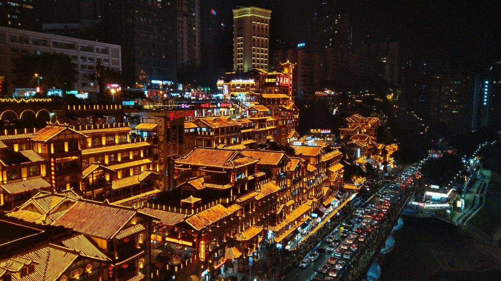
แลนด์มาร์กยามค่ำคืน — บ้านไม้ Stilt House 11 ชั้น ไฟเหลืองอบอุ่นทั้งหลัง คล้ายฉาก Spirited Away
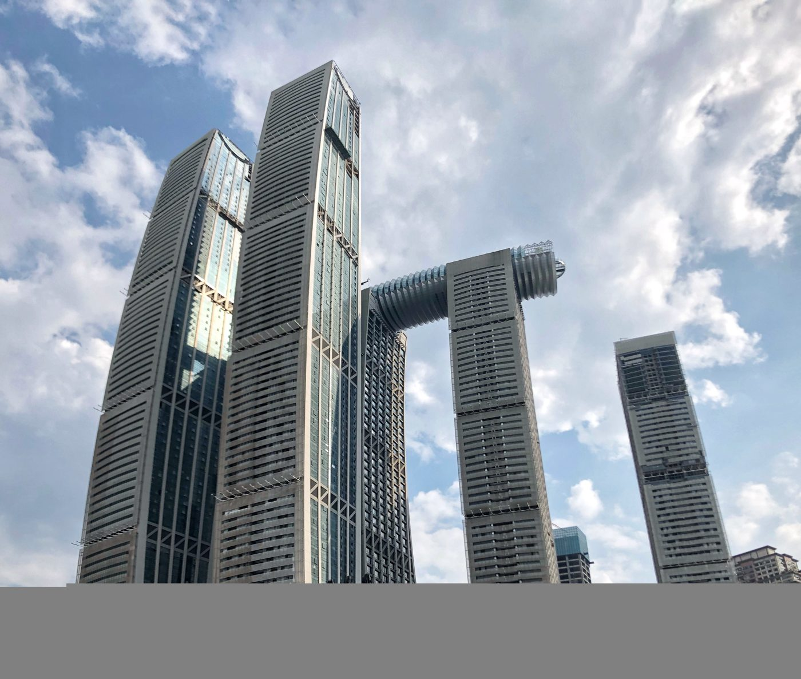
Reserve สาขาวิวสูงที่สุดในจีน — ชั้น 49 ของ Raffles City North Tower สูง 250 ม.
Liziba → Eling → Shibati → Raffles → Nanshan · 28 ก.ค. · ~1,300฿ / วัน
พักคืนนี้: Angela·Angel Homestay (คืนสุดท้าย)
เริ่มจาก Angela·Angel Homestay ใกล้ Hongyadong 09:00 น. · เดินไปสถานี Xiaoshizi 8 นาที → Metro Line 1 → Line 2 ไป Liziba (30 นาที · 5¥) · จากนั้นไป Eling Park ใกล้ ๆ → กลับ Shibati → ขึ้น Raffles → DiDi ไป Nanshan ตอนเย็น (25¥) · กลับโรงแรมโดย DiDi 30¥ ประมาณ 21:00 · ห้ามลืมแวะจุดถ่ายรูปมอเตอร์ไซค์ Viral!
Line 1 → Line 2 (25 นาที 5¥) · Sky Walk ฝั่งตรงข้ามตึก ฟรี · จับเวลารถไฟผ่านทุก 2–5 นาที
สวนเก่าแก่บนเขา ฟรีค่าเข้า · ลั้นช์ที่ Crow Bar / Mountain Bar คาเฟ่บนยอด วิว 270° เห็นทั้งเมือง (80 – 120¥ / คน)
Metro Line 2 → Jiaochangkou (Exit 4) · ย่านโบราณบูรณะใหม่ปี 2021 บ้านไม้สมัยหมิงเคล้าตึกระฟ้า — เป็น Old meets Cyberpunk
ทางเลือก: ขึ้น Bridge 188¥ หรือ Starbucks Reserve ชั้น 49 ฟรี วิวคล้ายกัน · สถาปนิกเดียวกับ Marina Bay Sands
BBQ outdoor บนเนินเขา Nan'an มองเห็น Hongyadong + Raffles + แม่น้ำ + Sunset Golden Hour ในเฟรมเดียว · ไม่รับจองโต๊ะ ไปก่อน 17:00
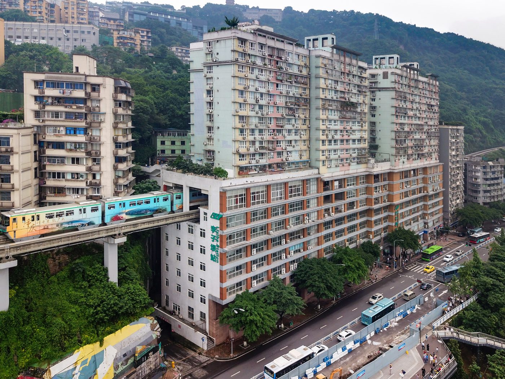
รถไฟวิ่งทะลุชั้น 6 – 8 ของอพาร์ตเมนต์จริง — Unseen ระดับโลกของ Chongqing
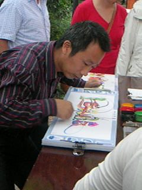
สวนสาธารณะบนเขาที่เก่าแก่ที่สุดของฉงชิ่ง — คาเฟ่ Crow Bar บนยอดเขา วิว 270°
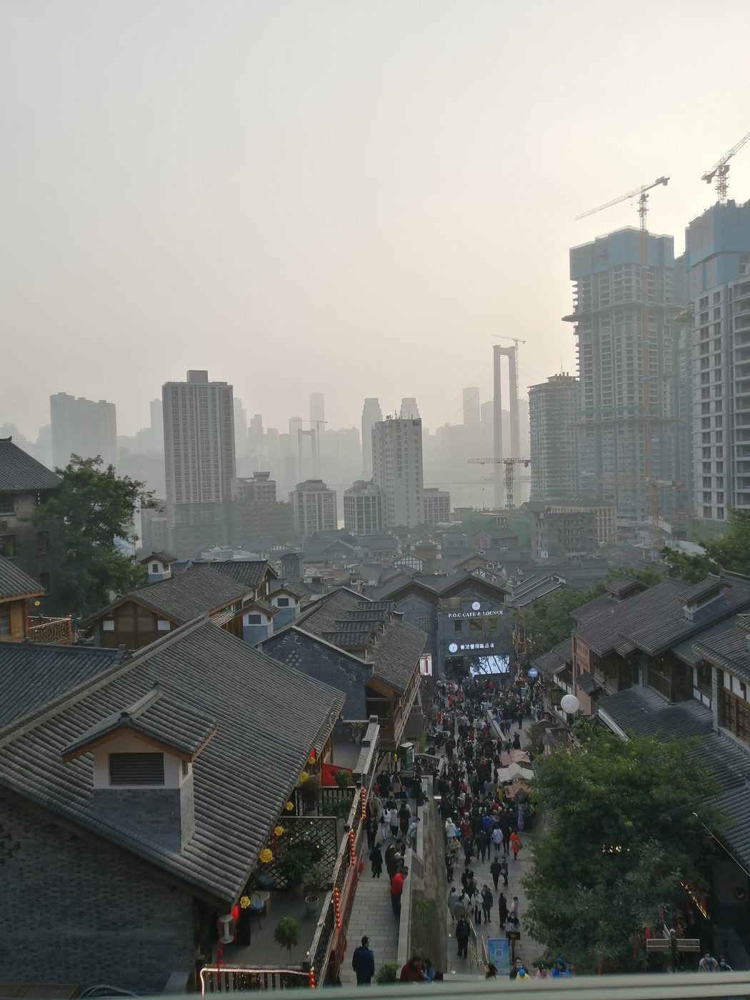
ถนนคนเดิน 18 บันได — ย่านโบราณบูรณะใหม่ปี 2021 บ้านไม้สมัยหมิงเคล้าตึกระฟ้า
สะพานคริสตัลลอยฟ้า 300 ม. เชื่อมตึก 8 หลัง · สถาปนิกเดียวกับ Marina Bay Sands
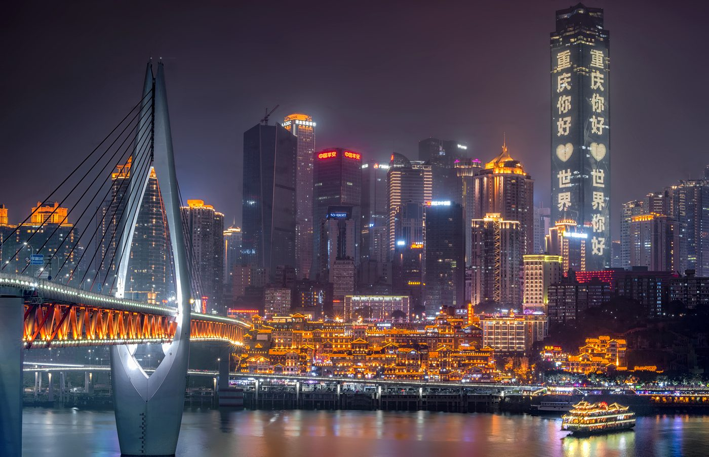
ร้านปิ้งย่าง outdoor บนเนินเขา Nan'an — มองเห็น Hongyadong + Raffles City + แม่น้ำแยงซี และ Golden Hour พร้อมกันในเฟรมเดียว · ราคา ~280¥ / 2 คน · ไม่รับจองโต๊ะ ต้องไปก่อน 17:00 น.
ฉงชิ่ง → Wulong 190 กม. · 29 ก.ค. · รถไฟ 1.5 ชม. · ~1,920฿
ย้ายที่พัก: Yicheng High Altitude River View (คืน 3-4)
Check-out Angela·Angel + ฝากกระเป๋าที่โรงแรมใหม่ Yicheng ก่อน 06:30 · DiDi ไป Chongqing North Station (20 นาที 35¥) · รถไฟ D6101 → Wulong (1.5 ชม. 65¥) · ออกจากสถานี Wulong นั่งบัส K1 เข้าอุทยาน (20¥ · 40 นาที) · เที่ยว Three Natural Bridges 5-6 ชั่วโมง · รถไฟกลับ 16:50 · ถึง CQ 18:30 · Check-in Yicheng + ดินเนอร์ Pipa Garden Hotpot
Line 6 (20 นาที 5¥) · เผื่อเวลา 30 นาทีก่อนเครื่องออก · ตรวจ Passport ใช้ตู้ตั๋วอัตโนมัติได้
1 ชม. 30 นาที (65¥ / คน) · จองล่วงหน้า 7 วันผ่าน Trip.com · นั่ง Second Class สบาย
ตั๋ว 155¥ / คน รวมรถภายในอุทยาน · เริ่มเที่ยว Three Natural Bridges · พกน้ำดื่ม · รองเท้าผ้าใบ
สูง 235 เมตร — สะพานหินธรรมชาติที่ใหญ่ที่สุดในเอเชีย · จุดถ่ายภาพแรกของอุทยาน
จุดถ่ายภาพชุด Transformers 4 · Tianfu Inn โรงเตี๊ยมในหลุมยุบ (ฉาก Curse of the Golden Flower)
มีร้านอาหารพื้นเมือง ~50 – 80¥ / คน · ถ้าไม่ติดใจ พกขนม + น้ำดื่มไปเอง
ถ้ายังมีเวลา เพิ่ม Furong Cave 120¥ — ถ้ำหินงอกหินย้อย UNESCO ความยาว 2.7 กม. (เพิ่ม ~2 ชม.)
ถึง Chongqing North 18:30 · Metro Line 6 กลับ Jiefangbei · ดินเนอร์ Pipa Garden Hotpot บน Nanshan
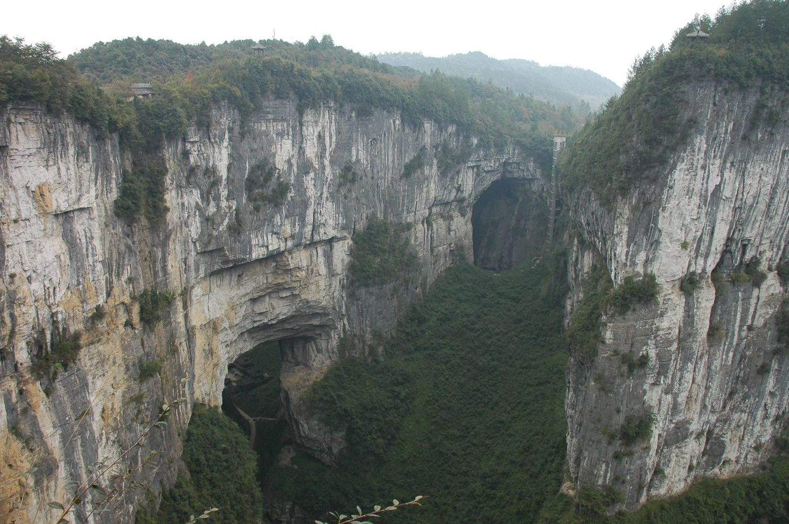
สะพานหินธรรมชาติ 3 แห่งที่ใหญ่ที่สุดในโลก เกิดจากการกัดเซาะของน้ำใต้ดิน 7 ล้านปี · ขึ้นทะเบียน UNESCO ปี 2007 · หลุมยุบ Tiankeng ขนาด 300×200 ม. ลึก 280 ม. — มีโรงเตี๊ยมจริงในหลุมที่ใช้ถ่ายภาพยนตร์ Curse of the Golden Flower และ Transformers
Ciqikou → Nanbin → Cableway → Chaotianmen · 30 ก.ค. · ~1,750฿
พักคืนนี้: Yicheng High Altitude River View (คืนสุดท้าย)
เริ่มจาก Yicheng High Altitude · กิน Brunch ที่คาเฟ่ในตึก · 10:00 Metro Line 1 ไป Ciqikou (30 นาที 5¥) · เที่ยวเมืองเก่า + Lunch 600 ปี · กลับ Metro Line 1 ไป Niujiaotuo เปลี่ยน Line 2 ลง Linjiangmen เดินไปกระเช้า · 15:00 ข้าม Yangtze Cableway ไปฝั่ง Nanbin → คาเฟ่ริมน้ำ · กลับด้วยกระเช้าหรือ DiDi · 21:30 ล่องเรือคืนจาก Chaotianmen
30 นาที 5¥ · เมืองเก่าราชวงศ์หมิงอายุ 600 ปี ฟรีค่าเข้า · มาก่อนเที่ยงเลี่ยงคน
Chen's Mahua House — ขนม Mahua + ก๋วยเตี๋ยวเนื้อ ~50¥ / คน · ซื้อชา Yongchuan, น้ำมันพริก
5 คาเฟ่ฮิต: Tube Coffee · ARK Coffee · Mountain & Sea · % Arabica · Lao Sha Cafe · เลือก 2–3 ที่ที่ใช่
ระยะ 1,166 ม. ใช้เวลา 5 นาที · 30¥ เที่ยวเดียว / 50¥ ไป-กลับ · Golden Hour สวยที่สุด
ทาน Suancai Fish หรือ Mao Xue Wang แบบเบาๆ ก่อนล่องเรือ ~80 – 120¥ / คน
ออกจาก Chaotianmen Pier · 60 นาที 158¥ · ผ่าน Hongyadong + Raffles + Sky Bridge ใต้ไฟค่ำคืน
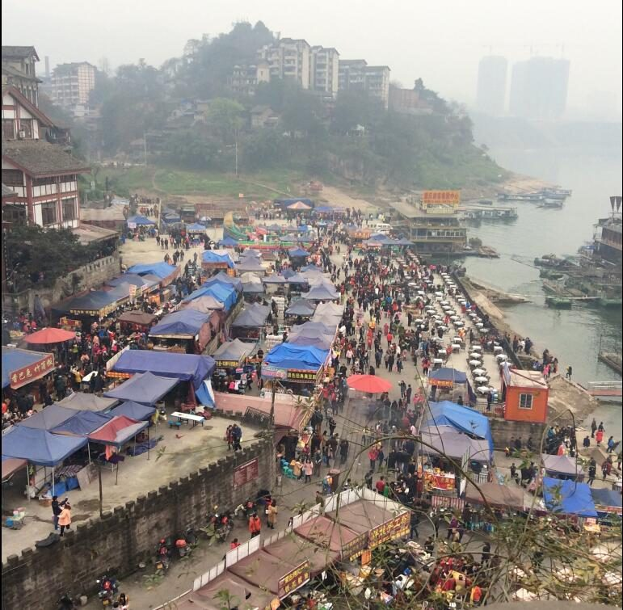
เมืองเก่าราชวงศ์หมิงอายุ 600 ปีริมแม่น้ำเจียหลิง — บ้านไม้ ตลาดของฝาก ขนม Mahua
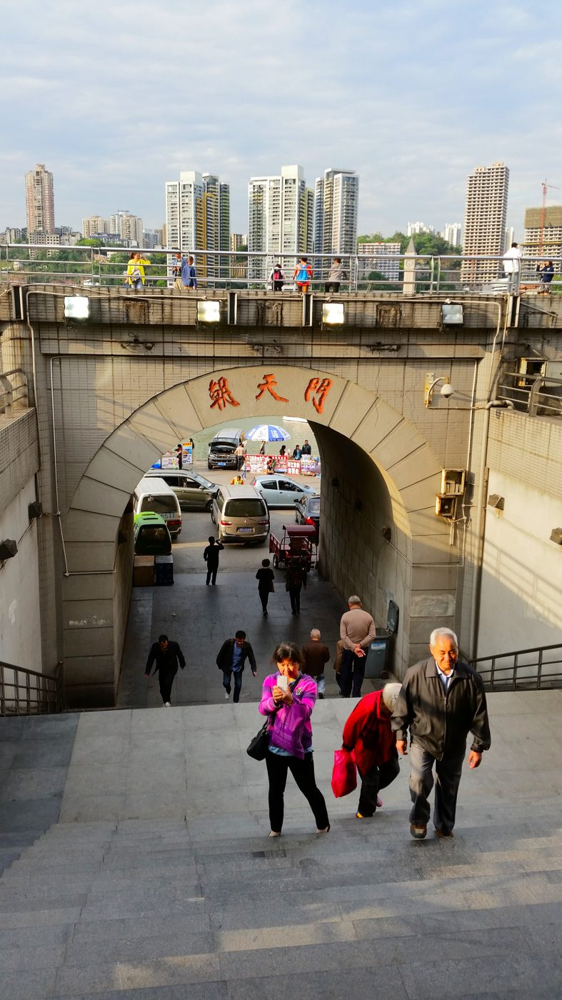
ท่าเรือสามแม่น้ำมาบรรจบ (Yangtze + Jialing) ทางเข้าเรือ Two Rivers Night Cruise
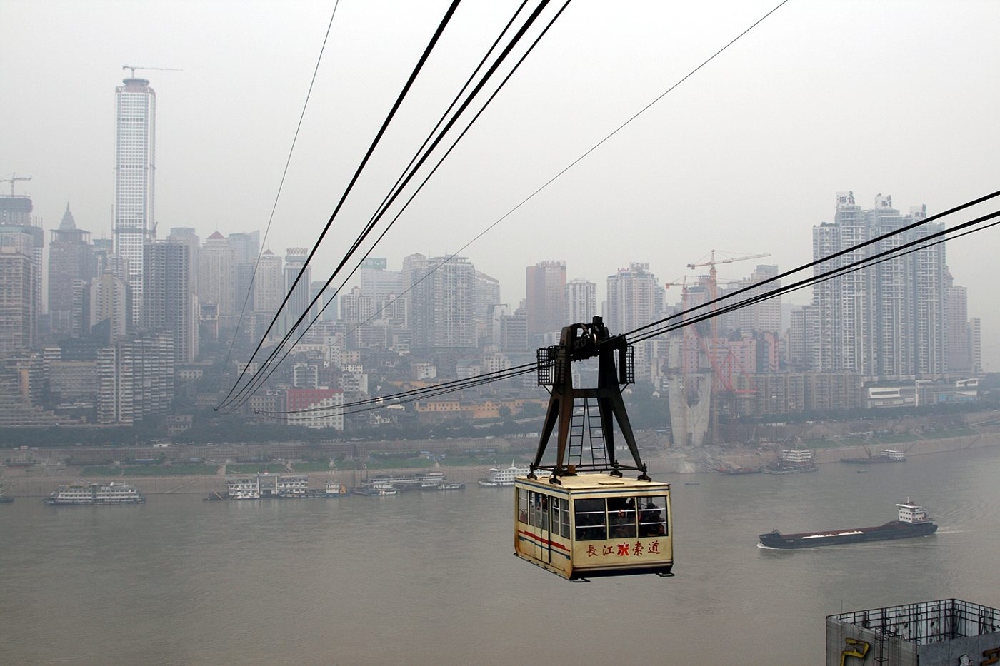
กระเช้าข้ามแม่น้ำแยงซีเก่าแก่ 35 ปี ระยะ 1,166 ม. · ขึ้นชื่อยุค 80s ของฉงชิ่ง
E'ling 2 Factory → CKG Airport · 31 ก.ค. · ~2,750฿
Check-out Yicheng · ไปสนามบินเผื่อ 3 ชม. · เครื่องออก 17:50
Check-out Yicheng High Altitude ก่อน 12:00 · ฝากกระเป๋าที่ Lobby · 09:30 DiDi ไป E'ling 2 Factory (15 นาที 25¥) · Brunch + ช้อปของฝาก Hipster · กลับโรงแรมรับกระเป๋า 13:30 · DiDi ไป Liuyishou กิน Lunch ปิดทริป · 14:30 รับกระเป๋า → Metro Line 6 → Line 10 ไป CKG (1 ชม. 5¥) หรือ DiDi 70¥ · ถึงสนามบินก่อน 16:00 · เครื่อง 17:50 → ถึง BKK 19:30
20 นาที 25¥ · โรงงานเก่ายุค 1900 ปรับเป็น Hipster District · พื้นที่ Art + Cafe + Concept Store
คาเฟ่ในตึกเก่ายุค 1900 · กาแฟ + ขนม 60 – 100¥ / คน · มุมถ่ายรูป Instagrammable
Concept stores, art prints, ของฝากเก๋ ๆ ต่างจากที่อื่น · เน้นของฝาก Hipster Style
หม้อไฟต้นตำรับฉงชิ่งก่อนกลับบ้าน · คราวนี้ลองน้ำซุปเผ็ดเต็ม (重辣) ที่กลายเป็น Comfort Food แล้ว
Metro Line 6 → Line 10 (1 ชม. 5¥) หรือ DiDi 70¥ · เผื่อเวลา 3 ชม. ก่อนเครื่องออก
SL927 / FD561 · 3 ชม. 30 นาที · ถึงสุวรรณภูมิ 19:30 น. · 一路平安
15 – 30¥ / ห่อ
80 – 200¥ / 100g
15¥
25¥ / ห่อ
30 – 50¥
80 – 150¥
50 – 200¥
10 – 50¥
80 – 150¥
10 – 20¥
คืน 1-2 ใกล้ Hongyadong เดินถึงทุกที่ · คืน 3-4 ตึกสูงวิวแม่น้ำ
High-rise River View Homestay
Jiefangbei · Hongyadong Branch
Homestay สไตล์ Apartment ส่วนตัวบนตึกสูง — วิวแม่น้ำเจียหลิงพร้อม Hongyadong ในเฟรม · เหมาะ 2 คืนแรกเพราะเดินถึงทุกแลนด์มาร์กในย่าน Jiefangbei · มี Host เป็นชาวจีนใจดี (ใช้ Translator คุยได้)
High Altitude River View Chongqing
ตึกสูง · พาโนรามาแม่น้ำ
High-rise พร้อมหน้าต่างเต็มกระจกมองเห็นแม่น้ำแยงซีและเจียหลิง · เหมาะ 2 คืนหลังหลังเที่ยว Wulong กลับเหนื่อย · มีเครื่องชงกาแฟในห้อง + วิว Sunrise ตอนเช้า · เงียบกว่าย่าน Jiefangbei
重庆摩托车打卡 · 山城风
เทรนด์ฮิตของ Douyin/Xiaohongshu ปี 2024-2026 — นั่งบน Scooter จอดข้างทางในซอยเก่าของฉงชิ่ง พร้อมแบ็คกราวด์ตึกระฟ้าและถนนขึ้นเขาเอียง 30° กลายเป็นรูปสัญลักษณ์ของยุค Cyberpunk China
ซอยข้าง Liziba Station — มี Scooter ของคนท้องถิ่นจอดเรียง · ขอถ่ายกับเจ้าของก่อน หรือใส่ค่า 10-20¥ · มุมที่ดี: ตรอกชันขึ้นเขา มีตึกเป็นแบ็ค
Maps →โซน Hipster มี Scooter Rental Studio ให้เช่าถ่ายรูปโดยเฉพาะ · 30-50¥ / 30 นาที · เลือกสี Pastel หรือ Vintage ได้
Maps →บันไดหินกับสกู๊ตเตอร์จอด — มุมเก่า/ใหม่ปะทะกัน · ถ่ายแนวตั้ง ตึก Raffles สูงขึ้นไปด้านบนเป็นแบ็ค
Maps →ใกล้ Ding Lao Tou BBQ บน Nanshan · นั่งสกู๊ตเตอร์เจอวิว Hongyadong กลางคืน · ต้อง DiDi ขึ้นไป 25¥
Maps →Golden Hour แสงนุ่ม ๆ + เริ่มมีไฟเปิด · มุมหน้าผาเห็น Skyline ชัด
ตั้งโทรศัพท์ระดับเอวสกู๊ตเตอร์ ถ่ายเงยขึ้น 15° · เน้น "Sky-to-Ground" ratio 70:30
นั่งข้าง ๆ ขาเอียง 45° · ไม่มองกล้อง · ถือกาแฟหรือ Hard cover ในมือ
หาสีดำ/น้ำเงินเข้ม/แดง · เลี่ยงสีเหลือง/ส้มจัด · แบรนด์ Yamaha Vino หรือ Vespa = bonus
ใช้ Google Translate ถามว่า "我可以拍张照吗?" · ใส่ทิป 10-20¥ · ไม่นั่งจริง ๆ ขึ้นมือเท่านั้น
โทนคุมขาว/ดำ/เบจ · กางเกง Cargo · รองเท้าผ้าใบ · แว่นกันแดด · Y2K style ก็ได้
#重庆摩托车 · #山城打卡 · #ChongqingViral · #CyberpunkChina
รวมตั๋วเครื่องบิน · ที่พัก · อาหาร · เที่ยว · พักโรงแรม Mid-range แชร์ 2 คน
หม้อไฟหม่าล่า · ปิ้งย่างวิวเมือง · Sky Bar 250 ม. · อาหารท้องถิ่น
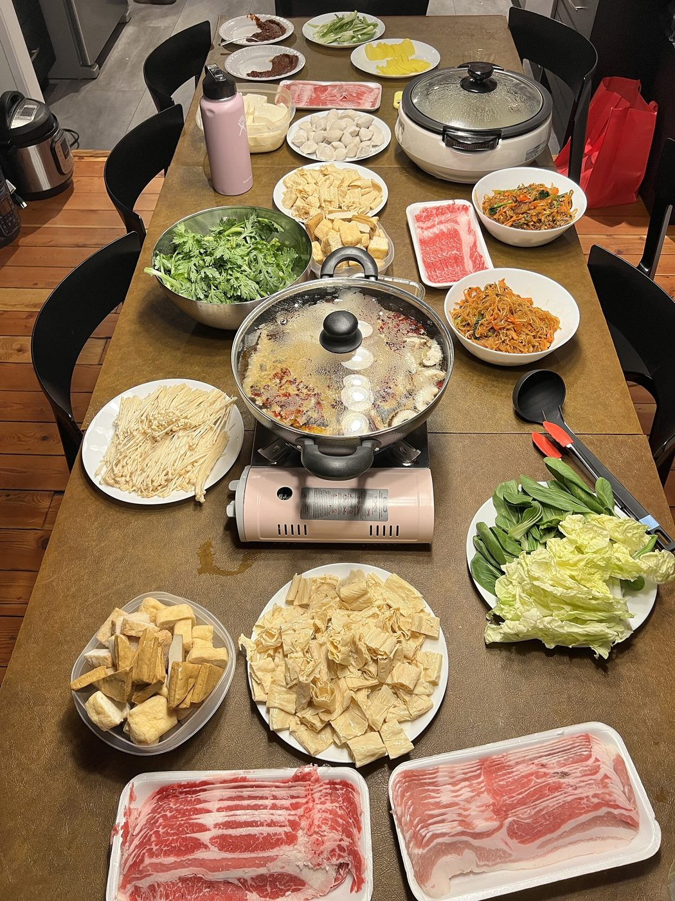
แบรนด์อันดับ 1 ของฉงชิ่ง · น้ำซุปเครื่องเทศ 30+ ชนิด · สาขา Jiefangbei เปิดถึง 02:00
View Map →หม้อไฟใหญ่ที่สุดในโลก · บน Nanshan · 8,000 ที่นั่ง · วิวเมือง 270°
View Map →BBQ outdoor วิว Sunset + Hongyadong · Line 6 Shangxinjie · ไม่รับจองโต๊ะ
View Map →ชั้น 49 (250 ม.) · Reserve สาขาเดียวที่มีวิว 360° · ฟรีค่าเข้า
View Map →เส้นเล็กหม่าล่ายามเช้า · ของขึ้นชื่ออันดับ 1 · กิน Breakfast แบบท้องถิ่น
View Map →Metro 13 สาย · DiDi · รถไฟความเร็วสูง · กระเช้า · เรือคืน
13 สาย · 2 – 10¥ / เที่ยว · 1-Day Pass 18¥ · จ่ายผ่าน Alipay QR (ค้นหา "重庆轨道交通")
แท็กซี่ออนไลน์ผ่าน WeChat / Alipay Mini Program · ภาษาอังกฤษได้
Chongqing North Station · จองผ่าน Trip.com ภาษาอังกฤษ
ห่างใจกลางเมือง 21 กม. · 3 ทางเลือกเข้าเมือง
ทุกสิ่งที่ต้องเตรียม รู้ และทำ — ก่อนถึงนครภูเขา